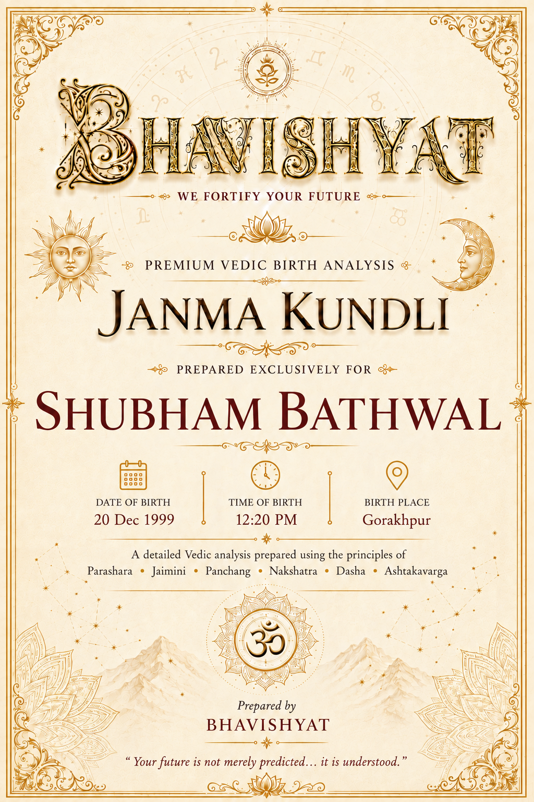
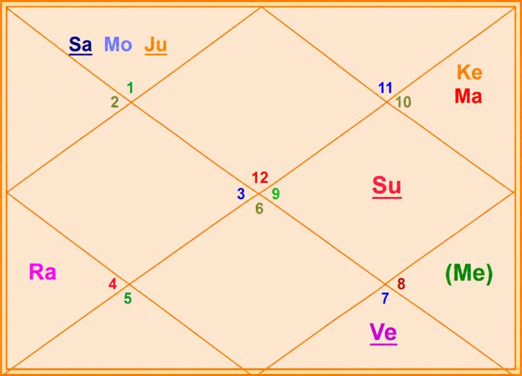

Janma Kundli • Shubham Bathwal
Birth Details & Panchang
| Name | Shubham Bathwal | Paksha | Shukla |
| Date of Birth | 20 December 1999 | Tithi | Trayodashi (13) |
| Time of Birth | 12:20 PM | Nakshatra | Krittika |
| Birth Place | Gorakhpur | Vaar | Monday |
| Longitude | 83°22' E | Yoga | Siddha |
| Latitude | 26°45' N | Karan | Kaulava |
| Ascendant | Pisces | Asc Lord | Jupiter |
| Tithi Lord | Jupiter | Tithi Deity | Kamadeva |
| Nakshatra Lord | Sun | Nakshatra Deity | Agni (Fire) |
| Yoga Deity | Kartikeya | Karan Deity | Yama |
| Yogi | Ketu | Duplicate Yogi | Mars |
| Abhiyogi | Rahu | Dagdha Rashi | Taurus (2), Leo (5) |
Natal Chart (Rashi)

| Planet Distribution | Right (Visible Half), Upper Half — family, wealth, social circle, status, work, long travel & unearned wealth as focus areas | ||
| Ascendant | Pisces (Meena) | Moon / Sun Sign | Aries (Mesha) / Sagittarius (Dhanu) |
| Malefic | Venus, Sun, Saturn | Shunya Nakshatra | Ardra, Ashlesha, Hasta |
| Maraka | Mercury, Mars | Dasha Balance | 4Y 9M 11D |
| Badhaka | Mercury (Budha) | Mangalik | No |
| Birth Dasha | Su-Ra-Ra (1-4-4) | ||
Janma Kundli • Shubham Bathwal
Favourable Influences
| Benefic Years | 18, 20, 25, 27, 29, 34, 36, 38 | ||
| Favourable Days | Monday, Tuesday, Thursday | ||
| Favourable Planets | Moon, Mars, Jupiter | ||
| Favourable Signs | Aquarius (11), Gemini (3), Virgo (6) | ||
| Favourable Ratna | Yellow Sapphire, Pearl | Favourable UpRatna | Yellow Topaz, Moonstone |
| Lucky Ratna | Coral | Favourable Deity | Jagdamba |
| Favourable Metal | Bronze | Favourable Colour | Yellow |
| Direction | North-East | Favourable Cereals | Gram |
| Favourable Items | Turmeric, Yellow Fruit (Sweet), Spiritual books | ||
| Favourable Plant | Strychnine tree (Kuchla) | Favourable Temple | Somnath Temple |
Planets in Rashi Chart
| Planet | Lordship | Sign | Nakshatra | Nak. Lord | Nak. Count | Nav Tara | Char Karak |
|---|---|---|---|---|---|---|---|
| Sun | 6L | Sagittarius (9) | Mula | Ketu | 17 N | 1 | Gnatikarak (6H) |
| Moon | 5L | Aries (1) | Krittika | Sun | 1 N | 2 | Atmakarak (Life) |
| Mars | 2L, 9L | Capricorn (10) | Dhanishtha | Mars | 21 N | 3 | Amatyakarak |
| Mercury | 4L, 7L | Scorpio (8) | Jyeshtha | Mercury | 16 N | 7 | Matrikarak (4H) |
| Jupiter | 10L, 1L | Aries (1) | Ashwini | Ketu | 26 N | 5 | DaraKarak (7H) |
| Venus | 3L, 8L | Libra (7) | Vishakha | Jupiter | 14 N | 9 | Bhratrikaraka (3H) |
| Saturn | 11L, 12L | Aries (1) | Bharani | Venus | 27 N | 6 | Putrakarak (5H) |
| Rahu | — | Cancer (4) | Pushya | Saturn | 6 N | 4 | — |
| Ketu | — | Capricorn (10) | Shravana | Moon | 20 N | 8 | — |
| Exalted Planet(s) | Mars | Debilitated Planet(s) | Saturn |
| Combust Planet(s) | — | Retrograde Planet(s) | Jupiter, Saturn |
Sarvastakvarga & Houses
| Very Strong (35+) | 12H | ||
| Strong (31-35) | 6H, 7H, 11H, 12H | ||
| Above Average (28-30) | 4H | ||
| Below Average (24-27) | 1H, 2H, 5H, 8H, 9H | ||
| Weak (21-23) | 3H, 10H | ||
| Very Weak (<21) | — | ||
Janma Kundli • Shubham Bathwal
Houses in Rashi Chart
| House | Sign | Planets | SAV | Lords | Aspect |
|---|---|---|---|---|---|
| 1H | Pisces (12) | — | 26 | — | Rahu |
| 2H | Aries (1) | Moon, Jupiter, Saturn | 25 | 5L; 10L, 1L; 11L, 12L | Mars |
| 3H | Taurus (2) | — | 21 | — | Ketu |
| 4H | Gemini (3) | — | 28 | — | Saturn |
| 5H | Cancer (4) | Rahu | 27 | — | — |
| 6H | Leo (5) | — | 33 | — | Mars, Jupiter |
| 7H | Virgo (6) | — | 32 | — | Ketu |
| 8H | Libra (7) | Venus | 27 | 3L, 8L | — |
| 9H | Scorpio (8) | Mercury | 27 | 4L, 7L | Rahu |
| 10H | Sagittarius (9) | Sun | 23 | 6L | Jupiter |
| 11H | Capricorn (10) | Mars, Ketu | 33 | 2L, 9L | Saturn |
| 12H | Aquarius (11) | — | 35 | — | — |
Bhinnashtak Varga (BAV)
| Sign | Sa | Ju | Ma | Su | Ve | Me | Mo | Ra |
|---|---|---|---|---|---|---|---|---|
| 12 | 5 | 5 | 4 | 3 | 4 | 3 | 2 | 3 |
| 1 | 1 | 4 | 4 | 4 | 4 | 5 | 3 | 4 |
| 2 | 2 | 2 | 3 | 2 | 3 | 4 | 5 | 3 |
| 3 | 6 | 5 | 1 | 3 | 5 | 2 | 6 | 6 |
| 4 | 2 | 6 | 2 | 4 | 6 | 4 | 3 | 3 |
| 5 | 5 | 7 | 3 | 5 | 4 | 5 | 4 | 3 |
| 6 | 6 | 4 | 5 | 6 | 2 | 4 | 5 | 3 |
| 7 | 3 | 4 | 3 | 4 | 3 | 6 | 4 | 3 |
| 8 | 1 | 5 | 2 | 2 | 7 | 7 | 3 | 3 |
| 9 | 3 | 4 | 2 | 4 | 5 | 3 | 2 | 4 |
| 10 | 2 | 4 | 5 | 6 | 5 | 6 | 5 | 3 |
| 11 | 3 | 6 | 5 | 5 | 4 | 5 | 7 | 5 |
Janma Kundli • Shubham Bathwal
Vimshottari Dasha
Maha Dasha
| Dasha Lord | From | To |
|---|---|---|
| Sun | 28-Sep-1998 | 28-Sep-2004 |
| Moon | 28-Sep-2004 | 28-Sep-2014 |
| Mars | 28-Sep-2014 | 28-Sep-2021 |
| Rahu | 28-Sep-2021 | 28-Sep-2039 |
| Jupiter | 28-Sep-2039 | 28-Sep-2055 |
| Saturn | 28-Sep-2055 | 27-Sep-2074 |
| Mercury | 27-Sep-2074 | 28-Sep-2091 |
| Ketu | 28-Sep-2091 | 27-Sep-2098 |
| Venus | 27-Sep-2098 | 28-Sep-2118 |
Antar Dasha (Rahu Maha Dasha)
| AD Lord | From | To |
|---|---|---|
| Rahu | 28-Sep-2021 | 10-Jun-2024 |
| Jupiter | 10-Jun-2024 | 03-Nov-2026 |
| Saturn | 03-Nov-2026 | 09-Sep-2029 |
| Mercury | 09-Sep-2029 | 29-Mar-2032 |
| Ketu | 29-Mar-2032 | 16-Apr-2033 |
| Venus | 16-Apr-2033 | 16-Apr-2036 |
| Sun | 16-Apr-2036 | 11-Mar-2037 |
| Moon | 11-Mar-2037 | 09-Sep-2038 |
| Mars | 09-Sep-2038 | 28-Sep-2039 |
Pratyantar Dasha (Jupiter Antar Dasha)
| P. Dasha | From | To |
|---|---|---|
| Sun | 08-Jan-2026 | 21-Feb-2026 |
| Moon | 21-Feb-2026 | 05-May-2026 |
| Mars | 05-May-2026 | 25-Jun-2026 |
| Rahu | 25-Jun-2026 | 03-Nov-2026 |
| Saturn | 03-Nov-2026 | 17-Apr-2027 |
| Mercury | 17-Apr-2027 | 12-Sep-2027 |
| Ketu | 12-Sep-2027 | 11-Nov-2027 |
| Venus | 11-Nov-2027 | 03-May-2028 |
| Sun | 03-May-2028 | 24-Jun-2028 |
Janma Kundli • Shubham Bathwal
Nav Tara Sequence
| Planet | Chara Karak | House | Lordship | Strength | Nakshatra | Lord | Placement |
|---|---|---|---|---|---|---|---|
| Sun | Gnatikarak (6H) | 10H | 6L | Weak (21-23) | Mula | Ketu | 11H |
| Moon | Atmakarak (Life) | 2H | 5L | Below Avg (24-27) | Krittika | Sun | 10H |
| Mars | Amatyakarak | 11H | 2L, 9L | Strong (31-35) | Dhanishtha | Mars | 11H |
| Rahu | — | 5H | — | Below Avg (24-27) | Pushya | Saturn | 2H |
| Jupiter | DaraKarak (7H) | 2H | 10L, 1L | Below Avg (24-27) | Ashwini | Ketu | 11H |
| Saturn | Putrakarak (5H) | 2H | 11L, 12L | Below Avg (24-27) | Bharani | Venus | 8H |
| Mercury | Matrikarak (4H) | 9H | 4L, 7L | Below Avg (24-27) | Jyeshtha | Mercury | 9H |
| Ketu | — | 11H | — | Strong (31-35) | Shravana | Moon | 2H |
| Venus | Bhratrikaraka (3H) | 8H | 3L, 8L | Below Avg (24-27) | Vishakha | Jupiter | 2H |
Birth Chart Nav Tara Chakra
| Sun (Janam) | 1 | Moon | 10 | 19 | ||
| Moon (Sampat) | 2 | 11 | 20 | Ketu | ||
| Mars (Vipat) | 3 | 12 | 21 | Mars | ||
| Rahu (Kshem) | 4 | 13 | 22 | |||
| Jupiter (Pratyari) | 5 | 14 | Venus | 23 | ||
| Saturn (Sadhak) | 6 | Rahu | 15 | 24 | ||
| Mercury (Nidhan) | 7 | 16 | Mercury | 25 | ||
| Ketu (Mitra) | 8 | 17 | Sun | 26 | Jupiter | |
| Venus (Ati Mitra) | 9 | 18 | 27 | Saturn |
Important Saturn Transits
| 1st Sade Sati | 20 Dec 1999 – 07 Apr 2003 | ||
| 2nd Sade Sati | 29 Mar 2025 – 31 May 2032 | ||
| 3rd Sade Sati | 14 May 2054 – 07 Mar 2062 | ||
| Kantak Shani | 13 Jul 2034 – 27 Aug 2036 | ||
| Ashtam Shani | 12 Dec 2043 – 23 Jun 2044; 30 Aug 2044 – 08 Dec 2046 | ||
Janma Kundli • Shubham Bathwal
Other Important Transits
| Type | Planet | House | SAV | From | To |
|---|---|---|---|---|---|
| Good | Saturn | 7H | 32 | 10 Sep 2009 | 15 Nov 2011 |
| Saturn | 4H | 28 | 31 May 2032 | 13 Jul 2034 | |
| Rahu | 12H | 35 | 18 May 2025 | 05 Dec 2026 | |
| Rahu | 11H | 33 | 05 Dec 2026 | 23 Jun 2028 | |
| Jupiter | 6H | 33 | 31 Oct 2026 | 25 Jan 2027 | |
| Jupiter | 6H | 33 | 26 Jun 2027 | 26 Nov 2027 | |
| Jupiter | 6H | 33 | 28 Feb 2028 | 24 Jul 2028 | |
| Challenging | Saturn | 9H | 27 | 02 Nov 2014 | 26 Jun 2017 |
| Saturn | 9H | 27 | 21 Jun 2017 | 26 Oct 2017 | |
| Saturn | 2H | 25 | 03 Jun 2027 | 20 Oct 2027 | |
| Saturn | 2H | 25 | 23 Feb 2028 | 08 Aug 2029 | |
| Saturn | 2H | 25 | 05 Oct 2029 | 17 Apr 2030 | |
| Rahu | 2H | 25 | 12 Apr 2022 | 30 Oct 2023 | |
| Rahu | 10H | 23 | 23 Jun 2028 | 10 Jan 2030 |
Lal Kitab Birth Chart
| HN | Rashi | Planets | Varshphal Yr 27 20 Dec 2025 – 19 Dec 2026 |
Varshphal Yr 28 20 Dec 2026 – 19 Dec 2027 |
|---|---|---|---|---|
| 1 | Pisces (12) | — | — | — |
| 2 | Aries (1) | Moon, Jupiter, Saturn | Mars, Ketu | Sun |
| 3 | Taurus (2) | — | — | — |
| 4 | Gemini (3) | — | Moon, Jupiter, Saturn | — |
| 5 | Cancer (4) | Rahu | — | — |
| 6 | Leo (5) | — | Mercury | — |
| 7 | Virgo (6) | — | Venus | Mercury |
| 8 | Libra (7) | Venus | Sun | Venus |
| 9 | Scorpio (8) | Mercury | — | Moon, Jupiter, Saturn |
| 10 | Sagittarius (9) | Sun | Rahu | Mars, Ketu |
| 11 | Capricorn (10) | Mars, Ketu | — | Rahu |
| 12 | Aquarius (11) | — | — | — |
Janma Kundli • Shubham Bathwal
Part B — Panchang Insights
| Tithi — Shukla Trayodashi | Makes the personality poetic, charming, attractive and sensual. Favours careers as actor, poet, fashion icon or influencer. Gives creative and charming expression and a keen interest in beauty. Avoid overindulgence. Being presentable, well-groomed and maintaining charm; observing Pradosh Vrat — lifestyle remedies. |
| Moon | The natal Moon is powerful — around 80% luminous — but carries malefic influences. Advisable for the native and his mother to perform Ganga Snan periodically; this also dilutes the malefic influence of Saturn conjunct Moon. Performing Rudrabhishek every birthday is recommended. Planetary impact adds seriousness and deep-thinking ability. |
| Vaar — Monday | Comfort and luxury in life. Intuitive, empathetic and adaptable, but may be prone to mood swings, anxiety and emotional drain while supporting or healing others. Public roles often enter the career or profession. |
| Nakshatra — Krittika | Intelligent, organiser, truthful, attractive, aggressive, foodie (less spicy), short-tempered, cultural. Loves travelling; straightforward; target achiever; good advisor; hardworking; risk taker; good communication; egoistic; creative; competitive; surgery / cutting / analytical skills. Distant place (foreign) supports profession or business. Good relations with relatives but strain with spouse. Expenses on litigation or spouse's health in relevant Dasha / bad transit. Self-interest and self-care get priority. Associated with hidden / secret knowledge, research and deep understanding of the subject matter. |
| Yoga — Siddha | Meant for success and talent. Makes the native aggressive, visionary for self, travel-loving and confident; should avoid multitasking. Mantra: Om Skandaya Namaha. |
| Karan — Kaulava | Friendly, cooperative and social. Good at negotiation, teamwork and group projects. Indicates success in collaborative efforts. Ability to thrive in cooperative environments, emphasising practicality and connection. |
| Dagdha Rashi — 2, 5 | Feeding cows will reduce the impact of Dagdha Rashi in the 3rd house of the chart. |
Janma Kundli • Shubham Bathwal
Rashi Chart Overview
| Planet Distribution | As per planetary distribution in the Rashi chart, family, wealth, friend / social circle, social status, work, long travel, unearned wealth (commission, insurance etc.) and in-laws become focus areas of life in the relevant Dasha / Transit. |
| Kal Sarp | There is no Kal Sarpa Dosh in the chart. |
Nature, Personality & Appearance — Ascendant Pisces
| Core Nature | Emotional, dreamy, imaginative, intuitive, spiritual, creative and artistic. |
| Physical Features | Fair complexion, attractive face, big eyes. |
| Lifestyle | Loves oceans, music, meditation, solitude, spiritual places, foreign travel and art. Dislikes harsh reality and conflicts. Drawn to healing, charity and spirituality. |
| More About Ascendant | Upright, honest and humane. Changeable temperament and influenced by others' opinions. Extremely sympathetic, forgiving, generous, honest and reliable. Often follows two occupations and succeeds in new fields. Successful in businesses dealing with liquids, spirits and export-import. Likelihood of strong influence of spouse. Cannot tolerate suffering, even in animals, and readily helps others. |
| Weakness | Escapist, overly trusting, emotionally overwhelmed. |
Moon Sign — Aries
| Emotional Nature | Active, bold, adventurous, energetic, impulsive, dynamic and a natural leader. Decisive, brave, confident, passionate, competitive, action-driven, ambitious, pushful and frank. Practical ideas; fond of travel; quick actions; strong executive ability. As Atmakarak, the Moon shapes the soul's drive toward courage, initiative and self-led achievement. |
Janma Kundli • Shubham Bathwal
Impact of Planetary Placements
- Lots of success in career (extremely good); reaching high rank and status at very powerful places. Good for government-related work, politics and govt job yoga. Name and fame. Growth in the life of the native's father before the age of 10. Disagreement / dispute with father or fatherly figures; ego issues / aggression.
- Money-minded; wealth yoga. Good for health, wealth, education and support from mother and siblings. Good trainer. Usually stays above ground floor. Good for parental property.
- Good analytical skills; good planner; wealth yoga. Sudden fluctuation in income. Support from friends and family; luxuries in life. Good yoga for business. Event venue / community hall near birthplace or residence.
- Supports winning in competition. May give decision-making issues / wrong decisions. May like to explore different dharma / philosophy. Fighting litigations; foreign connections.
- Good manager; very good for wealth; intelligent; smart; long life; sweet talker and good at communication.
- Gives hidden relationship; health issues to partner. Don't take guarantee of someone else; prone to false allegations. Partner brings big change / transformation in life. Ability to rise like a phoenix after trouble.
- Delays in savings; lucky; makes one shrewd and street-smart. Money gets stuck when lent; avoid working on credit. Good for coal, machinery, property etc. related work. Prone to unhealthy eating habits.
- May give problem / disturbance in education; education from a distant place / foreign. Beware of overnight large-money schemes. Unique and out-of-the-box ideas; unique problem-solving skill. Frequent problems in electronic / electrical devices.
Janma Kundli • Shubham Bathwal
Impact of Planetary Placements (contd.)
- Multiple sources of income; spends like a king. Complains about own luck — but is lucky. Problematic for mother / grandmother. Very selective in making friends.
- Good career (outshines); hard-working; gets powerful position; dominant at workplace; lucky for father; courageous; name and fame; success in competition. Investment in gold and property is very good. Gets bored of work quickly. Never put gold as collateral.
Planetary Combinations
- Fond of living in isolation.
- Gets happiness of luxurious vehicles. Yoga for outshine in career as well as good wealth — but Mars gets afflicted.
- Adds seriousness in nature; prone to negative / chaotic thoughts frequently. Good for detailed research / analysis. Change of place / separation in family after birth of native. Some prolonged health issues to mother / family member. Eyesight issues likely; diabetes prone.
- Someone in family / relatives has cancer, long disease or major surgery. Pain in waist, lower back, legs etc. Surgery yoga to self / elder sibling. Blood-related ailment prone.
- Good yoga for studying, knowledge, name and fame. Mother — well educated or well learned, intelligent, very wise; mother dominates the household. Partner — irritating, nagging, giving knowledge on every second stuff; dominates in house.
Janma Kundli • Shubham Bathwal
12 Houses of Rashi Chart
- Kind, sensitive, compassionate, dreamer; spendthrift on self-care, luxury, clothes and pleasures. Prone to frequent health problems; much investment on self. Shares / donates a lot. Confusing thought process sometimes; duality (entirely different personality in different roles). High chances of foreign / distant-place settlement. Maintaining good looks and self-care enhances luck.
- Aggressive in money matters; some harshness / boldness in speech. Takes big decisions / responsibility in family and finance matters.
- Support from siblings; sibling living at distant place / foreign country. Stable thought process; will take time to implement ideas (think and then execute). Makes money through communication or writing.
- Multiple properties and houses; multi-storey residence; very expressive at home; restless in house.
- Willingness in learning something new; emotional for children; very creative / imaginative.
- Yoga for holding powerful position at workplace; authoritative at workplace. Dispute triggered by ego; enemies are also powerful.
- May feel competitiveness with partner; frequent arguments / disputes. Gives challenges in relationship / partnership.
- Sudden event related to partner; some relationship challenges. Long-term health issues or living away from partner for some time (in relevant Dasha). Wealth comes through partner / inheritance.
- Transformation in life through higher learning, father or any guru. Much transformation in the life of father. Issues in higher education. Avoid sharing travel plans.
- Luck favours in career. Aligned for consultant, teacher, advisor, spiritual guide, banker etc. Lucky for the organisation worked with.
Sarvashtakvarga — Yearly Outlook
| Challenging Years | 6, 39 | ||
| Good Months of the Year | January – March, June – July, September – October | ||
| Auspicious Months (ceremony, puja etc.) | February – March, June – August | ||
| Challenging Months of the Year | March – June, November – December | ||
| Lucky People for Native | Aquarius (11), Gemini (3), Virgo (6) | ||
| Unfavourable People for Native | Sagittarius (9), Pisces (12), Aries (1), Cancer (4), Scorpio (8) | ||
| Aptitude | Good analytical skills; ability to win competitions; yoga for good wealth, partnership, relationship and investment; support of luck; powerful / influential circle | ||
| Favourable Direction for Opening a Bank Account | North of birth place / residence | ||
| Wealth-Giving Planets | Sun, Saturn, Moon, Mercury | ||
| Key Growth Window | Rahu–Jupiter (May 2024 – Nov 2026) — favourable for wealth gain; Rahu–Saturn (Nov 2026 – Oct 2029) — winning disputes, gains through service sector; watch health of self / family | ||
Janma Kundli • Shubham Bathwal
12 Houses of Rashi Chart (contd.)
- Puts or has to put lots of effort in maintaining friendship / social circle. Lots of effort in profession to achieve gains. Differences / problems with elder sibling.
- Gains through spirituality, foreign land / connection. Cheating in investment; may face losses due to secret enemies.
- Wealth yoga; comfort lover; takes responsibility of family and finance. Mother has much influence on native. Ability of persistence / hard work. Food, family, finance and support of family — most important for the native.
- Blessing in earning wealth and accumulation. Support from family and mother.
- Luck favours in wish fulfilment and gaining money. Long travels favour earning. Father may help in earning / profession; father has big and influential connections. Has to live away from father or differences during relevant Dasha / Transit. Devoted towards father (lifestyle remedy).
- Raj Yoga; gets beautiful house; works for social welfare / religion; happiness through religious work; makes the native influential.
- Idealistic partner; gets relationship opportunity while on long travel / pilgrimage. Yoga for marriage in different culture / caste. Long-distance relationship.
- Favour of luck in career. Karma related to dharma, masses, family, feeding others.
- Powerful wealth yoga. Income through social circle and network; supports collaboration. Earning through dealing in niche products, rare artefacts etc. Gains through family.
- Gains through plots of land, medicines, wines, masses, entertainment, travel, banking, commission etc.
Janma Kundli • Shubham Bathwal
12 Houses of Rashi Chart (contd.)
- Learnings and upskilling through transformation. May be member of secret group(s) or secretive about group / circle.
- Gives struggle, dispute and fight in / related to profession. Good for service sector. Pending karma with father's family. Maternal family supports in profession and social status.
- Resilient; power to deal with critical situations; crisis-management skill.
- Gain through investment(s). Potential for earning through foreign client / MNC / overseas, import-export work, medical / legal field.
Karmic Remedies — Lal Kitab
- Maintain boundaries in helping / doing welfare for others.
- Avoid blue / black clothes. Do not colour hair black — if necessary, use brown. Avoid dispute / fight with father (father figure, authority).
- Throw away unused or badly conditioned mixer / juicer / grinder or press, if any. Don't live on the ground floor.
- When the road outside the house is damaged, loss / waste of money follows. If liver / stomach issues arise, expenses will shoot up.
- Feed a black cow.
- Keep a silver elephant or silver bar dipped in Gangajal at home.
- Throw a coin in a river.
- Keep a brass deer at home.
- Avoid Tulsi, money plant etc. at home. Prefer photo of an aggressive lion; PUMA products; visit male deity preferably.
- Take a holy dip in Pushkar or Haridwar on Kartik Poornima.
- Do not donate copper utensils or coins to beggars.
Abbreviations
A Sacred Dedication
With Love & Blessings
for Shubham Bathwal's journey ahead
नेहाभिक्रमनाशोऽस्ति प्रत्यवायो न विद्यते।
स्वल्पमप्यस्य धर्मस्य त्रायते महतो भयात्॥ ४०॥
इस पथ पर आरम्भ किया हुआ कर्म कभी नष्ट नहीं होता और न ही इसका कोई उलटा फल होता है। इस धर्म का थोड़ा-सा भी अनुष्ठान मनुष्य को बड़े-से-बड़े भय से रक्षा करता है।
"In this path, no effort is ever lost, and there is no adverse result. Even a little progress on this path of dharma protects one from the greatest fear."
— Bhagavad Gita, Chapter 2, Verse 40
May Shubham Bathwal walk the Siddha path his chart promises — where Pisces compassion meets Aries courage, and every sincere step in career, duty and dharma compounds into lasting strength. May his phoenix spirit rise through every trial, and may even the smallest right effort shield him from fear and guide him toward fulfilment.
“Your future is not merely predicted… it is understood.”